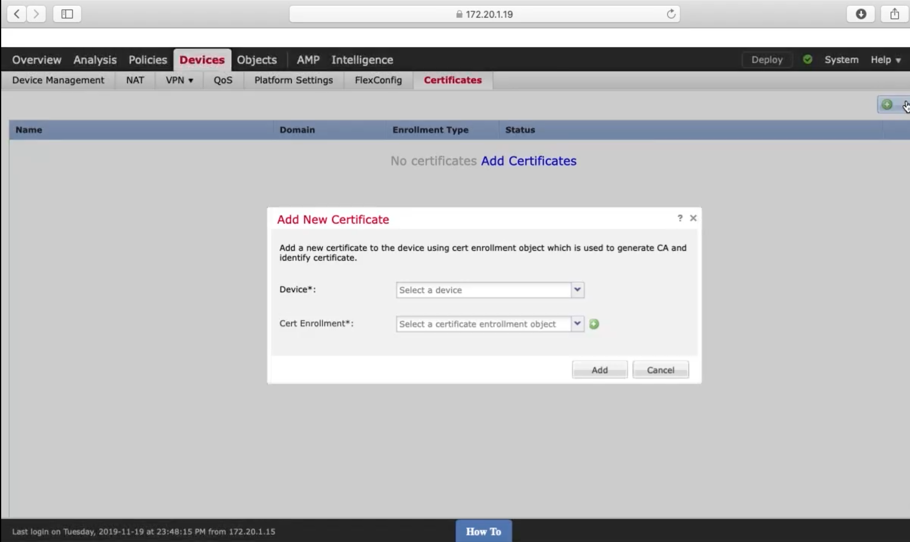

Caleb Sargeant's Docs
Networking
Security
Cisco
Core Security
Security Concepts
Network Security Fundamentals
Network Security with Cisco IOS
Network Security with Cisco ASA
Network Security with Cisco Firepower
Describing and Configuring VPNs
1. Comparing Cryptography Components
2. Comparing Cisco VPN Types
3. Configuring DMVPN
4. Configuring FlexVPN
5. Configuring Cisco AnyConnect on the ASA
6. Configuring Cisco AnyConnect on the FTD
Secure Network Access, Visibility, and Enforcement
Secure Network Access Using Cisco ISE
Endpoint Protection and Detection with Cisco AMP
Content Security with Cisco WSA & Cisco Umbrella
Email Security with Cisco ESA
Routing
Switching
NGFW & NGIPS
DevNet Day
ACI
ASA
ASAv
Network Design and Documentation
DNA
General
Genie
ISE
Nexus
NSO
VIRL
FortiGate
HP Procurve
Juniper
Ubiquiti UniFi
NetDevOps Tool Chest
Computing
Ansible
Cloud
Containerisation
Linux
Python
Microsoft
Other
API
General
iPerf3
Caleb Sargeant's Docs
»
Cisco
»
Core Security
»
Describing and Configuring VPNs
»
6. Configuring Cisco AnyConnect on the FTD
View page source
6. Configuring Cisco AnyConnect on the FTD
¶
Integrating Active Directory with the FTD
¶
Installing an Identity Cert on the FTD
¶

Configuring a Remote Access Connection Profile on a Cisco FTD
¶
Configuring a NAT Exemption and ACL Rules for VPN User Traffic
¶